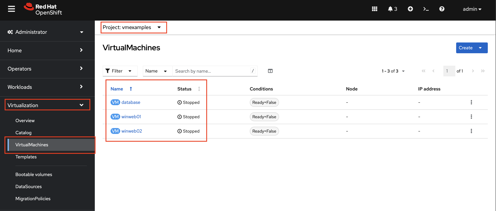
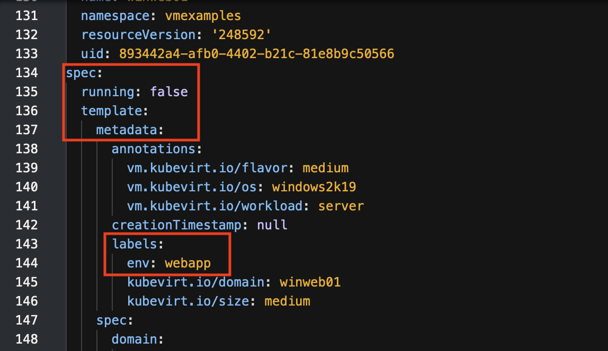
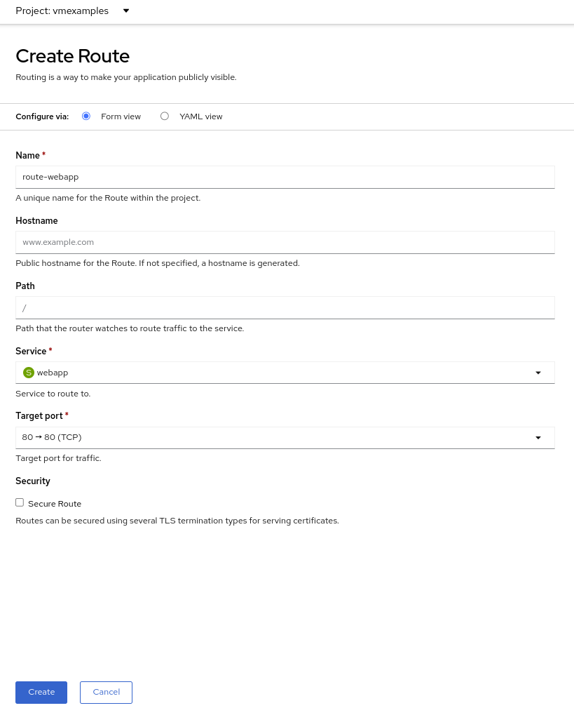
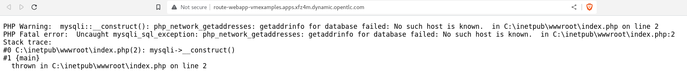

Review and configure migrated Virtual Machines
Your VMs have now been migrated and can be started on OpenShift Virtualization. You could connect to the VM consoles and interact with them as you would in VMware vCenter.
However, the VMs are not connected to each other yet - this is because we connected the VMs to the SDN, which works a little bit differently than the external network the VMs were previously connected to.
A load balancer on OpenShift is called a Service. You will create this shortly. But the service selects the recipients of the traffic that it load balances via labels assigned to the targets. Currently, the VMs do not have a label assigned yet.
In order to successfully associate the VMs with the Service, we need to do the following:
-
Add a label to the VMs. We will use the same label for both Windows IIS servers because they are both behind the same load balancer.
-
Create the service to make the two Windows IIS servers available for other workloads on the cluster. OpenShift will automatically make the load balancer internally accessible using the name of the Service as the DNS name.
-
Make the service available outside of OpenShift by creating a Route.
-
From the OpenShift console, navigate to Virtualization → VirtualMachines and ensure the migrated VMs successfully imported and are running.
Ensure that you select the project
vmexamples -
Access to the
winweb01and navigate to the YAML tab. -
Find the
spec:section and under thetemplate.metadataadd the following lines to label the VM resources:labels: env: webappMake sure to get the indentation exactly right - just like in the screenshot below.
 -
Repeat the process for the VM
winweb02. -
Start the Virtual Machines
database,winweb01andwinweb02-
Ensure the VMs are properly working by accessing to the console tab of each VM.
-
-
Navigate to Networking → Services and press Create Service. Remember the label that you added to your VMs (
env=webapp)? Here you see that the Service uses that label in its selector to pick which VMs to route traffic to. -
Replace the YAML with the following definition
apiVersion: v1 kind: Service metadata: name: webapp namespace: vmexamples spec: selector: env: webapp ports: - protocol: TCP port: 80 targetPort: 80 -
Press Create.
-
Now the Windows IIS are accessible from within the OpenShift cluster. Other virtual machines are able to access them using the DNS name
webapp.vmexamples. However, since these web servers are the front end to an externally accessible application, we will expose them using a Route.Navigate to Networking → Routes in the left navigation menu. Press Create Route and fill the following information:
-
Name:
route-webapp -
Service:
webapp -
Target port:
80 → 80 (TCP)
-
-
Press Create
OpenShift can automatically (re)encrypt traffic entering the cluster via a Route, however, we don’t need to use TLS for this application. The Secure Route option should not be checked.
 -
Navigate to the address shown in Location field
 -
When the page loads, you will see an error. This is because the Windows web servers are not able to resolve the internal name
databaseto connect to the database VM.To fix the connectivity issue, we need to create another Service for the database VM so that it is discoverable by other VMs connected to the SDN. Note that because this database does not need to be accessible from outside of the OpenShift environment, you do not need to create a route for this service.
Navigate to Networking → Services and press Create service. Replace the YAML with the following definition
apiVersion: v1 kind: Service metadata: name: database namespace: vmexamples spec: selector: vm.kubevirt.io/name: database ports: - protocol: TCP port: 3306 targetPort: 3306In this example the service is simply using a selector of the VM’s name. This is a default label that is automatically added to all VMs. Since there is only one VM that matches the selector, the service will not load balance to the database, instead we’re using the Service for discovery via the internal DNS name.
-
Reload the webapp URL and expect to get the proper result

-
Summary
In addition to the Migration Toolkit for Virtualization, there are three other migration toolkits. The combination of these can be used to move many workloads into and within OpenShift clusters depending on your organization’s needs.
-
Migration Toolkit for Runtimes - Assist and accelerate Java application modernization and migration.
-
Migration Toolkit for Applications - Accelerate large-scale application modernization efforts to containers and Kubernetes.
-
Migration Toolkit for Containers - Migrate stateful application workloads between OpenShift clusters.
For more information about these, please reach out to your Red Hat account team.
In this module, you explored how to migrate virtual machines from VMware vSphere to Red Hat OpenShift Virtualization. You have migrated a web application containing two Windows systems and a Linux system. You used OpenShift features to provide networking access to the application, and you learned to create services to provide internal access in the project.